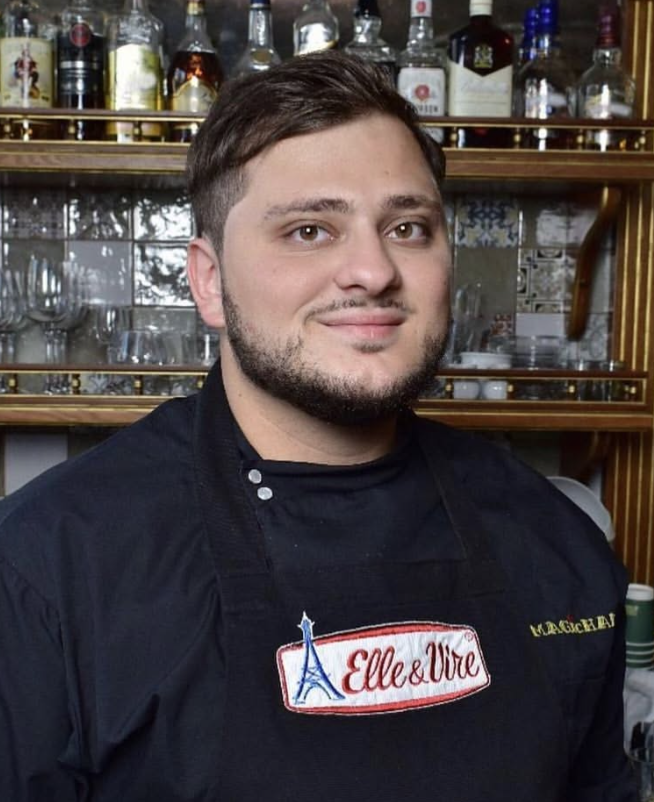

Jacques
Pastry chef and owner since 2015, bringing European craft and a lifetime of kitchen experience to every creation.
Our Story
Pastry chef Jacques, his wife Alina, and their son George — a team built on passion, partnership, and craft.

Jacques · Pastry Chef & Owner
My name is Jacques. I'm a pastry chef since 2015. I own Paul & Jack trattoria in my own country.
My wife is Alina. I met her when she came to me for an interview for a job — from now on we are always together. I taught her everything I know in the kitchen, and now we are a team.
This year our team has replenished with one more member — our little George. He will be our most important assistant.
We are new in the country, but we have a huge desire and passion for what we do in life. Now we are closed for a renovation and preparation with a new menu. I will keep you in touch of what is happening in our bakery and hope to see you soon, when we will open our doors.
Have a great day.
“Nothing great in the world has ever been accomplished without passion.”
Shared from @paulandjack_nc on Instagram. Today, Paul & Jack welcomes guests in Wake Forest and Downtown Raleigh.
The Team
Pastry chef and owner since 2015, bringing European craft and a lifetime of kitchen experience to every creation.
Partner in life and in the kitchen — trained by Jacques and now an essential part of the Paul & Jack team.
The newest member of the family — and, as Jacques says, their most important assistant.